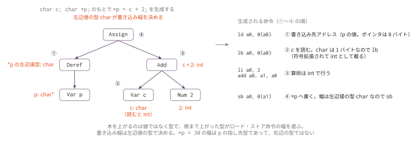
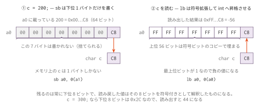

コマ8: 型検査の導入
今日のゴール
コンパイラに型を覚えさせ、型サイズに応じてロード・ストア命令を選べるようにする。
コマ7 では & と * を実装し、ポインタも整数もすべて8バイト値として扱った。
変数表が覚えていたのはスタック上のオフセットだけで、ld / sd だけで読み書きできた。
しかしこの先に進むには、変数の型そのものを覚えておく必要がある。
char は1バイト、int は4バイト、ポインタは8バイトで、読み書きに使う命令が変わる。
char c;
int n;
c = 'A'; // 1バイト書く → sb
n = 4; // 4バイト書く → swこの回では、次の3つを導入する。
| 導入するもの | 内容 |
|---|---|
| 型表 | ローカル変数表に型（ty_str）を持たせる |
| 型別の命令選択 | 型サイズで lb/lw/ld・sb/sw/sd を選ぶ |
char の昇格と縮小 |
読むと int へ昇格し、代入・固定引数・returnでは下位8ビットへ縮小する |
ポインタ演算・添字 p[i]・sizeof(型名) は、この型の仕組みの上に載る。
そちらはコマ9 で実装する。
この回で扱う範囲
対象にする型は、int、char、ポインタである。
| 型 | サイズ |
|---|---|
int |
4バイト |
char |
1バイト |
T * |
8バイト |
この言語に配列はない。連続した領域を扱う話（malloc と添字）はコマ9 で扱う。
構造体、グローバル変数はさらに後の回で扱う。
この回までの言語仕様（EBNF）
この回までに書けるプログラムの文法を、累積の形でまとめる。
記法と最終形の全体像は
language_spec.md の「形式文法（EBNF）」を参照。
追加は新しい規則・選択肢、変更は前回の形の置き換えです。ラベルのない行は既存です。
この回までの文法全文（54行）
stars ::= '*' /* 多段ポインタ int ** はコマ9 */
scalar_type ::= 'int' [ stars ]
| 'char' [ stars ] /* struct タグ * (不透明ポインタ) はコマ11、struct 定義・void * はコマ12 */
obj_type ::= scalar_type
ret_type ::= scalar_type
| 'void'
program ::= external_decl { external_decl }
external_decl ::= func_proto
| func_def /* struct 定義はコマ12、グローバル変数はコマ13 */
var_decl ::= obj_type IDENT ';'
param ::= scalar_type IDENT
param_list ::= param { ',' param }
func_proto ::= ret_type IDENT '(' [ param_list ] ')' ';' /* '...' はコマ10 */
func_def ::= ret_type IDENT '(' [ param_list ] ')' func_body
func_body ::= '{' { var_decl } { stmt } '}'
stmt ::= expr_stmt
| block
| if_stmt
| while_stmt
| for_stmt
| 'break' ';'
| 'continue' ';'
| 'return' [ expr ] ';'
expr_stmt ::= [ expr ] ';'
block ::= '{' { stmt } '}'
if_stmt ::= 'if' '(' expr ')' stmt [ 'else' stmt ]
while_stmt ::= 'while' '(' expr ')' stmt
for_stmt ::= 'for' '(' [ expr ] ';' [ expr ] ';' [ expr ] ')' stmt
expr ::= assign_expr
assign_expr ::= unary_expr '=' assign_expr /* 右結合 */
| cond_expr
cond_expr ::= binary_expr [ '?' expr ':' cond_expr ] /* 右結合 */
binary_expr ::= unary_expr { bin_op unary_expr }
bin_op ::= '*' | '/' | '%' /* 論理 && || はコマ13 */
| '+' | '-'
| '<' | '>' | '<=' | '>='
| '==' | '!='
unary_expr ::= primary_expr /* 添字 [ ] と sizeof はコマ9、. -> はコマ12 */
| '-' unary_expr
| '*' unary_expr
| '&' unary_expr
| '++' unary_expr
| '--' unary_expr
primary_expr ::= INT_LITERAL
| CHAR_LITERAL
| IDENT '(' [ arg_list ] ')'
| IDENT
| '(' expr ')'
arg_list ::= assign_expr { ',' assign_expr }この回までの二項演算子の優先順位（高い順）:
| 優先順位 | 演算子 | 結合 |
|---|---|---|
| 1（高） | * / % |
左 |
| 2 | + - |
左 |
| 3 | < > <= >= |
左 |
| 4 | == != |
左 |
表の読み方はコマ1の「木の形は規則で決まっている」と
language_spec.md の「演算子」を参照。
この回で増えたのは scalar_type の char と primary_expr の CHAR_LITERAL の2行だけである。
型が増えても構文の形は変わらず、変わるのはサイズと命令の選択である。
字句トークンの定義はどの回でも同じであるため、ここでは繰り返さない。
language_spec.md の「字句トークン」を参照。
型の扱い
新しいスキャフォールドでは、Type クラスを使わず、ty_str 文字列で型を扱う。
型サイズが必要なときは、次のヘルパーメソッドを使う。
| メソッド | 役割 |
|---|---|
self.size_of_ty_str(ty) |
ty_str から型のバイトサイズを返す |
self.elem_ty_str(ty) |
ポインタの要素型（指し先型）の ty_str を返す |
self.is_ptr_ty_str(ty) |
ポインタ型かどうか |
ty_str の例:
| Cコード | ty_str |
|---|---|
int a; |
int |
char c; |
char |
int *p; |
int* |
int **pp; |
int** |
self.alloc_local() では、ty_str から self.size_of_ty_str() を使って必要なスタック領域を計算する。
ローカル変数表に型を持たせる
型ごとにサイズと命令が変わるため、この回で self._locals の中身を変える。
# コマ3〜コマ7
self._locals: dict[str, int] # name → offset
# コマ8 以降
self._locals: dict[str, tuple[int, str]] # name → (offset, ty_str)コマ7 まではオフセットだけを覚えていればよかったが、
*p で lb / lw / ld を選ぶには、変数の型も覚えておく必要がある。
値の取り出し方も変わる。オフセットは self._locals[name][0]、
型は self._locals[name][1] である。スケルトンでは前者を self.lookup_var()、
後者を self.lookup_local_ty() として用意してあるので、
添字を直接書かずにこの2つを使う。この表現はコマ15 まで変えない。
式の型を求める
変数の型が分かっても、*p や p = &n のような式の型は、そこから計算しないと分からない。
そのための関数が type_of_expr_* と type_of_lval_* である。
| 式 | 型の求め方 |
|---|---|
3 |
常に int |
n |
変数表から引く |
&n |
n の左辺値型に * を付ける |
*p |
p の型から * を1つ剥がす（elem_ty_str） |
n = 3 |
左辺値の型 |
f(...) |
関数の宣言・定義に書かれた戻り値型 |
左辺値としての型（_type_of_lval）と、値としての型（_type_of_expr）を分けるのは、
コマ7 で codegen_lval と codegen を分けたのと同じ理由である。
*p = 30 の書き込み幅を決めるのは、*p の左辺値としての型である。

コマ1 の eval_ast が子の値を親へ返したのと同じ再帰で、ここでは子の型が親へ上がる。
根まで上がった型が、次節で見るロード・ストア命令の幅を選ぶ。
関数呼出しの型を引く
関数呼出しも式なので、宣言・定義に書かれた戻り値型を使う。
例えば int *identity(int *p) の呼出しは int * 型であり、
*identity(&n) の値の型は、そこから * を1つ剥がした int になる。
同じ仕組みで、char * を返す呼出しから値を読むときは lb を選べる。
Parserは関数宣言・定義の戻り値型を node.ty_str に残している。
提供済みの collect_function_returns(prog) が、コード生成の前に
self._function_returns（関数名 → 戻り値の ty_str）へ集める。
main() からの呼出しも用意してあるので、収集処理を実装し直す必要はない。
受講者が実装するのは、呼出しノードの node.name を使って
この表から型を取得する type_of_expr_Call である。
変数の型を変数表から引く処理と同じ考え方でよい。
収集時にはself._function_params（関数名 → 固定仮引数の型の列）も用意する。
固定char引数を渡す前の変換に使うが、宣言との引数個数・型や再宣言の完全な診断は行わない。
最大8個の上限は提供Parserが検査する。
宣言がない名前の診断も標準トラックでは保証せず、表にない場合は従来どおり
int として扱う。これは未宣言呼出しを許すという仕様変更ではなく、
標準トラックの診断範囲の限定である。
戻り値型の表は関数ごとのローカル変数表と異なり、次の関数を生成するときも保持する。
コマ9以降のポインタ演算と、コマ12の identity(&s)->field も、
この呼出し式の型をそのまま使う。
_load_ty / _store_ty
型サイズに応じて、読み書きする命令を変える。
def _load_ty(self, ty):
size = self.size_of_ty_str(ty)
if size == 1:
self.emit(" lb a0, 0(a0)")
elif size == 4:
self.emit(" lw a0, 0(a0)")
else:
self.emit(" ld a0, 0(a0)")
def _store_ty(self, ty):
size = self.size_of_ty_str(ty)
if size == 1:
self.emit(" sb a0, 0(a1)")
self.emit(" slli a0, a0, 56")
self.emit(" srai a0, a0, 56")
elif size == 4:
self.emit(" sw a0, 0(a1)")
else:
self.emit(" sd a0, 0(a1)")コマ7では常に ld / sd でよかったが、この回からは型サイズを見て命令を選ぶ。
codegen_Var / codegen_Assign / codegen_Deref は、この2つを呼ぶ形に書き換える。
char の昇格と縮小
char 変数は、この _load_ty / _store_ty を型サイズ 1 で通せばそのまま動く。
言語仕様上の約束は次の通りである。
| 場面 | 仕様 | 生成 |
|---|---|---|
char を読む |
int へ昇格する（値を保存する） | lb（符号拡張して 64 ビットに載る） |
char へ代入する |
int から下位 8 ビットへ縮小する | sb（下位 1 バイトだけを書く） |
char への代入式の値を使う |
縮小後のsigned char値を返す | 提供済み_convert_to(ty)でa0を縮小・符号拡張する |
| 固定char引数を渡す | 仮引数型へ縮小してから受け渡す | 実引数の評価後、退避する前に_convert_to(ty) |
| char関数からreturnする | 戻り値型へ縮小して返す | return式の評価後に_convert_to(self._return_ty) |
算術そのものは常に int で行うので、d = c + 2 のような式に特別な処理は要らない。
c + 2 を int として計算し、代入のところで sb を出せばよい。
c = 300; のように char に収まらない値を入れると、下位 8 ビットだけが残って 44 になる。
c = 200; なら下位 8 ビットは 0xC8 で、読み出すと符号拡張されて -56 になる。
sb は a0 自体を変えないため、格納した後に a0 の下位8ビットを符号拡張する。
これにより、n = (c = 300) では n も 44、n = (c = 255) では n も -1 になる。
代入式の値を使わない場合でも同じ処理を通してよい。

sb が書くのはレジスタの下位 1 バイトだけで、lb はその 1 バイトの最上位ビットを
上位 56 ビットへ写して読み戻す。char_narrow.c が突くのはこの往復の境界である。
関数境界と条件式で型を使う
char f() { return 300; } の呼出し値は44である。int f(char c)へ255を渡すと、
仮引数の値は-1になる。呼出し先のロードに任せず、呼出し側で固定仮引数の型へ変換する。
外部のコンパイラで作った関数も、正しく変換した値を受け取ることを前提にしている。
可変長部はcharからintへの昇格だけで、int値300を縮小してはいけない。
a ? b : cの型は、選ばれた腕ではなく両腕から決める。char/int同士はint、
同型ポインタはその型、ポインタと0はポインタ型、T *とvoid *はvoid *になる。
この小さな共通型の処理はtype_of_expr_Condとして提供する。
コマ4で実装した「選ばれた腕だけを実行する」処理はそのまま使う。
編集するファイル
mycc.py
importlib でコマ7 の Codegen07 を継承した Codegen08 に、以下の機能を追加する。
スケルトンにあらかじめ書かれているものは次の通りで、実装対象ではない。 呼び出して使うだけでよい。
| 提供済み | 役割 |
|---|---|
size_of_ty_str(ty) |
ty_str から型のバイトサイズを返す |
elem_ty_str(ty) |
ポインタの要素型 ty_str を返す |
is_ptr_ty_str(ty) |
ポインタ型かどうかを返す |
alloc_local(name, ty_str) |
size_of_ty_str を使って型付きで領域を確保する |
lookup_var(name, line) / lookup_local_ty(name, line) |
self._locals からオフセットと型を引く |
collect_function_returns(prog) |
関数宣言・定義から戻り値型と固定仮引数型の表を作る。main() から呼出し済み |
_convert_to(ty) |
a0をcharへ縮小・符号拡張する。char以外では値を変えない |
type_of_expr_Cond(node) |
両腕から条件式の共通型を決める |
_push_a0() / _pop_into(reg) |
一時値の退避と復帰 |
_type_of_expr / _type_of_lval / codegen / codegen_lval の match |
各ハンドラへの振り分け |
実装対象は次の通りである。
| 実装対象 | 役割 |
|---|---|
type_of_expr_*（Num / Var / Addr / Deref / Assign / Call） |
各ノードの値としての型を求める |
type_of_lval_*（Var / Deref） |
各ノードの左辺値としての型を求める |
_load_ty(ty) / _store_ty(ty) |
型サイズに応じて lb/lw/ld と sb/sw/sd を選ぶ |
codegen_Var / codegen_Assign / codegen_Deref |
型に応じたロード・ストアに置き換える |
collect_decls_Decl(node) |
node.ty_str を渡して型付きで alloc_local する |
_alloc_params(node) / _emit_func_prologue |
パラメータも型付きで確保・保存する |
_gen_call(name, args) / gen_stmt_Return(node) |
コマ6・4の処理を再利用し、固定仮引数型と戻り値型への変換を加える |
実装手順
- スケルトンの
Codegen08がCodegen07をimportlibで継承していることを確認する collect_decls_Decl/_alloc_params/ 関数プロローグの退避を型付きにする（どのテストでも必要）type_of_expr_*/type_of_lval_*を埋めて、式の型を引けるようにする。Callは提供済みの戻り値型の表を参照する_load_ty/_store_tyを型サイズ対応にする（提供済みのsize_of_ty_strを使う）codegen_Var/codegen_Assign/codegen_Derefを_load_ty/_store_ty経由に書き換える_store_tyではcharの格納後に提供済み_convert_to(ty)を呼ぶ。char_narrow.c・char_ptr.cを確認する- 自分のコマ6の
_gen_callを再利用し、各実引数の評価後・退避前に固定部の型へ変換する。可変長部は縮小しない - 自分のコマ4の
gen_stmt_Returnを再利用し、return式の評価後にself._return_tyへ変換する。return;は値を評価しない
スケルトンは、固定char引数のない呼出しとchar以外のreturnを前の回へ委譲する。 そのため、手順7〜8より前でも基本のint・ポインタの検査を進められる。 char引数のある呼出しは手順7、char戻り値は手順8を終えてから検査する。
tests/
機能単位で切ったテストを先に置いてある。上から順に通していくと、 どこで詰まっているかが1機能ぶんに絞られる。「通る目安」は実装手順の番号である。
| ファイル | 内容 | 主に見る実装 | 通る目安 | 期待値 |
|---|---|---|---|---|
load_store_ty.c |
char/int/ポインタの読み書きだけ |
_load_ty / _store_ty / type_of_* |
手順3〜5 | 30 |
typed_params.c |
char/int/ポインタの引数が各幅で退避・読み戻しできること |
_alloc_params / 関数プロローグ / _gen_call |
手順7 | 75 |
char_var.c |
char 変数の読み書き（lb/sb）・int への昇格・代入時の縮小 |
char の昇格と縮小 |
手順5 | 67 |
char_narrow.c |
縮小の境界（127 / 128 / 255 / -1 / 256 / 300）と代入式の値 |
_store_ty の縮小・符号拡張と _load_ty の lb |
手順6 | 45 |
char_ptr.c |
char * 経由の読み書きが 1 バイト幅になること |
type_of_lval_Deref / codegen_Deref |
手順6 | 50 |
char_return.c |
戻り値を格納せず、比較・演算へ直接使う | gen_stmt_Return |
手順8 | 4 |
char_argument.c |
固定char引数の変換と、int引数の値の保持 | _gen_call / gen_stmt_Return |
手順7〜8 | 3 |
cond_char_pointer.c |
ポインタと0の両方向で1バイトを読む |
提供済みtype_of_expr_Cond |
手順5 | 2 |
cond_single_arm.c |
選んだ腕だけの実行を維持 | コマ4のcodegen_Condを継承 |
手順5 | 1 |
call_ptr.c |
プロトタイプから戻り値型を引き、関数が返した int * を参照する |
type_of_expr_Call / codegen_Deref |
手順3〜5 | 42 |
テスト
python3 scaffold/test_runner.py sessions/08_typestests/load_store_ty.c がコンパイルでき、終了コード 30 になれば基本形は成功。
個別に動かす場合は、次のようにする。
python3 sessions/08_types/mycc.py sessions/08_types/tests/load_store_ty.c \
| riscv64-linux-gnu-gcc -x assembler -static - -o out
qemu-riscv64 ./out
echo $?注意
_load_ty / _store_ty の判定は型サイズだけで行う。
ポインタはどの型を指していても 8 バイトなので、ld / sd になる。
char は 1 バイトだが、読み出すと int へ昇格する。
lb は符号拡張して 64 ビットレジスタに載せるので、負の値を入れた char は負のまま読める。
char への代入は sb で下位 8 ビットだけを書き（縮小）、
a0 にも縮小後の符号拡張した値を残す。
算術そのものは常に int で行うため、d = c + 2 に特別な処理は要らない。
書き込み幅は、左辺値の型で決める。*p = 30 の幅を決めるのは p の指し先型であって、
右辺の型ではない。ここを _type_of_expr で引くと、char * への代入が 4 バイト書きになる。
添字 p[i]・ポインタ演算・sizeof(型名)・前置 ++ の型対応はコマ9 で扱う。
この回の段階では、これらを含むプログラムはコンパイルできない。
この回の size_of_ty_str(ty) は引数が1つでよい。
構造体サイズを引くために self._struct_defs を渡す2引数版になるのはコマ12 からである。
ここまでで着手できる発展課題
型サイズを扱えるようになったので、int の演算が32bitで折り返さない点を仕様へ寄せる
S2 に着手できる。
S2の概念の学習と check.py による単体検査は、この回から始められる。
構造体・malloc を使う実行テストにはコマ12までの実装が必要で、
golden.py の完走にはコマ15で完成させた final/mycc.py が必要になる。
生成したアセンブリで lb / lw / ld の選択を1命令ずつ確認したいときは、学習ツールの実行表示 に貼り付ける。
この回の完成形に相当する OCaml 版参考実装が ../../workbook/ocaml/README.md にある。完成相当の実装なので、まず自分の実装方針を検討してから確認すること。